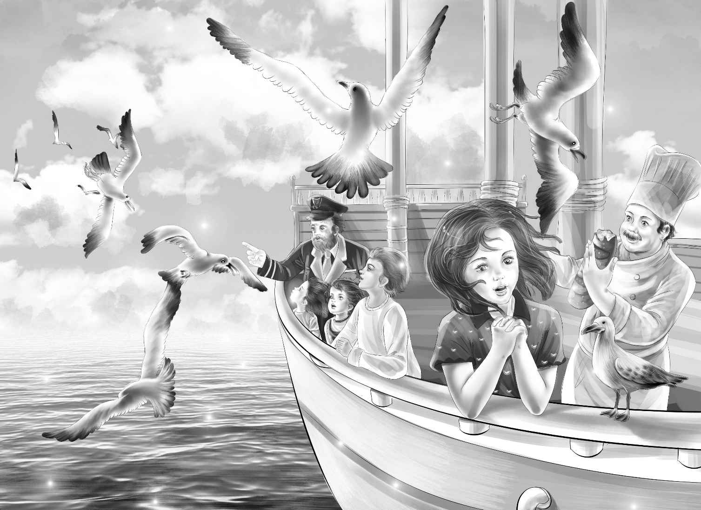

Ship’s School
海鸥追逐着货船，在低空中飞行着，鸣叫着。厨师顺手扔了一些食物给它们，于是聚过来的海鸥越来越多，叫声也越来越大。
“好美的景象！”杰西激动地叫道。她靠近船舷，仔细观赏着。这时，一只大海鸥落到了她身边的护栏上。“瞧这海鸥，多漂亮啊！”
“船长，咱们在海上要走多少天？”亨利问。
“大约两个星期吧！”布朗船长回答道，“把你们一家人放到小岛上以后，‘海星号’会继续朝塔希提航行。”
“一家人？”迈克不禁问道，“我也算这家里的一员吗？”
“当然算，”班尼说，“要不是有你，我还不想来呢！”
“那么，‘海星号’返航时一定会来接我们的，是吗？”亨利继续问道。
“对！你们要和纳思在岛上待上两到三个星期呢！很合你们的心意吧？”
“那当然，”杰西说，“我们喜欢这样的生活：自己寻找食物和餐具，自己去探险。”
此时，已到薄暮时分，天空被红色、粉色和紫色的晚霞所渲染，美到不可方物。

“我们在家乡从来没见过这么美丽的景色！”维莉说。
直至太阳落山，这美景仍没有半分消退。只是换作满天的繁星在深邃的夜空中闪烁着。
班尼说：“我从没见过这么亮的星星，真没想到原来它们这么明亮。”
船长说：“在这儿你们能看到各种各样的星星——有在你们家乡看得到的，也有在家看不到的。来，我把南十字星座给你们指出来。”
看完星星之后，大家都累了，于是各自回房休息。他们一夜好梦，直睡到第二天早上。
刚刚吃完早餐，一阵铃声突然响起。
“这是什么铃？”迈克问，“听起来像是我们学校的上课铃呢！”
“我觉得就是上课铃，”亨利笑着回答，“快看爷爷，是他在敲铃！”
果然，奥登先生大声宣布道：“从今天起，我们每天早上九点钟要开始上课啦！大家就坐在这几排长凳上学习，这个盒子里有你们需要的东西。”
孩子们探过头去，只见盒子里有各种钢笔、铅笔、颜料和纸。
杰西翻开她那本蓝色的课本。“噢——”她情不自禁地欢呼道，“我的第一课是讲海鸥、星星和鱼！”
“这就是我看过的那张图片！”迈克说，“这是一条飞鱼呢！”
于是，大家很快便沉浸在快乐的阅读中。过了一会儿，维莉站了起来，从盒子里取出一盒颜料，开始画海鸥的速写。亨利也着手勾勒起暗色夜空里的北斗星，迈克和班尼则临摹着飞鱼。
突然，纳思的叫声打破了沉静：“有鲸鱼！快来看！”
大家赶紧跑向船舷，争相观看着。
“它离得好近！”迈克喊道，“瞧它的尾巴！”
“游过去了！游过去了！它开始喷水啦！”亨利叫道。只见鲸鱼喷出一股高高的水花儿。不多时，海豚也赶来凑热闹了。
“看起来有两百多只海豚呢，”纳思说，“它们每天都会像这样，排着长长的队去岸边捕鱼，晚上再回来！”
“瞧它们翻滚得多灵巧啊！”迈克说，“难道海豚的身体是球形的吗？”
“当然不是，你看看课本上的海豚图片，”奥登先生说，“这是第二课的内容。”
就这样，孩子们只要一看到新鲜事物，就赶紧在书上寻找相应的图片和说明。
“我没说错吧？这些课本相当奇妙。”爷爷说，“还有一课是讲发报室的，你们肯定会喜欢。明天就由发报室的比尔带你们去看看雷达。”
第二天，孩子们参观了船上的所有地方。很快，他们就认识了“海星号”上的每一位水手。而此后的每天，他们都会增长一点新见识。
一天早晨，大家突然发现海岸线已经消失不见。铃声响过之后，五个孩子又开始学习了。
亨利走到船舷的护栏边，向下看去。
“大家快来啊！”他叫了起来，“有好玩的东西！”
大伙儿围了过去，只见轮船尾巴上挂着一个白色的长袋子，随着船往前漂着。
“这是什么？”迈克问道。
“是用整张布做成的网，”亨利说，“专门用来捕捞浮游生物。”
“浮游生物是什么？”迈克又问。
“浮游生物就是体形很小很小的生物，比如鱼卵、海藻什么的，”亨利回答道，“有些浮游生物甚至小到看不见，可它们却是大鲸鱼的主要食物来源呢！”
杰西说：“我听说过这句话，‘如果人们愿意，就可以用浮游生物养活全世界的人类’！”
“看来人类不愿意。”班尼说道。
“没错，因为人们都不喜欢吃浮游生物。”杰西说。
迈克说：“说不定会有人发明让浮游生物变得好吃的办法——或许等我长大后就能想到好主意啦！”
“迈克，你一定行的！”班尼赞同道，“说不定你真能想出好办法。啊，让我看看，网里有什么东西。”
孩子们抬起头，发现纳思正朝这里走来。纳思说：“大家都下来吧，我们准备收网啦！”
“我们能看到网里的浮游生物吗？”迈克问。
纳思说：“有些能看到，有些小到单凭肉眼是看不到的，不过我们有个显微镜，透过它能看到神奇的景象。”
“太棒了！”迈克一边喊着，一边跑下船舷。
一名水手收起了网，将浮游生物倒进一个大桶里。浮游生物的颜色十分鲜艳，在幽暗的船舱里闪闪发光，就像红色的火焰一样。
“真漂亮！”维莉赞叹道。
“好臭啊！”迈克说。
“这就是鱼腥味儿，”班尼说，“迈克，你得慢慢适应鱼的味道。”
“看，这儿有只小螃蟹！”迈克叫道，“是全透明的！”
“哇，好小的鱼儿！”维莉叫道，“还有粉色和绿色的海藻。”
奥登先生借到了显微镜，他将显微镜放到桌子上，并递给亨利一块玻璃片，“去取些浮游生物放到玻璃片上。”
当玻璃片被放置在显微镜下时，大家兴奋不已。亨利是第一个观看的。“也对，亨利正要学这课嘛！”班尼理解地说。
通过显微镜，孩子们看到了很多小小的卵、海藻和小鱼，而这些都是肉眼绝对看不到的。
迈克感慨不已：“浮游生物真小啊！简直是超级小不点。想想看，大鲸鱼吃着这些小玩意儿，居然能长得那么巨大！”
班尼说：“看来我们都学会了亨利的课程，爷爷真有办法——这个轮船学校就是他最先想出来的。”
接下来的第二天，大家又一起学起了维莉的课程。轮船学校非常安静，大伙儿都沉浸在学习中。
突然，维莉兴奋的叫声打破了宁静：“嘿，你们都听说过库克船长的故事吗？”
“听说过，”迈克说，“他在航海时发现了好几百座岛屿。”
“答对了，迈克，”维莉说，“我一直和你一样，只知道他发现了小岛——噢，我都不知道该怎么说了……”
“慢慢讲，维莉！”亨利引导道，“咱们有的是时间。除了发现小岛外，库克船长还做了什么？”
“亨利，谢谢你的耐心！我现在才知道，他做过一件比发现岛屿重要得多的事情——是他最先发现了维生素C。你们听这一段话：‘每次出海，如果航程较远，一半以上的水手都会死于败血病。库克船长觉得这是因为水手们只吃咸肉和饼干的缘故，于是他决定让所有水手每天都吃酸白菜和洋葱，并且喝一种用柠檬和橙子制作的糖浆。’”
“应该不会很难吃。”班尼说。
“是不难吃，但有的水手就是不愿意吃，不过最后他们还是拗不过。库克船长并不知道维生素C是什么，他只知道，如果吃了酸白菜和橙子，人们就不会得败血病。”
“看来我们每天要喝橙汁也是这个原因。”迈克说。
“迈克，说得对！”维莉叫道，“要知道，库克船长在海上航行了整整三年，一直到返航的时候，才有一名水手死掉。”
“那人一定是不肯吃酸白菜！”班尼说。
“我想也是。”迈克附和道。
亨利和杰西看了看维莉，不约而同地想道：“我从没见过维莉一口气说这么多话。”
维莉仍然在滔滔不绝：“还有一件奇妙的事情就是，一次库克船长在穿越远离南方的碎冰区时，他发现碎冰融化后，居然变成了淡水。”
“这实在是太奇怪啦！”亨利说，“我一直以为盐水会冻成盐冰，解冻后依然是盐水呢！”
“其实不是！”维莉笑了，“所有人都是和你一样的想法，大家都懒得动手做实验。看来库克船长实在是很聪明，而且也很勇敢！推荐你们都来看看我的课本！”
“我也是这么想的，亲爱的，”奥登先生说，“我要亲自读一读。”
日子一天一天地过去，“海星号”在紫色的海面上已经航行了快两个星期了。
迈克说：“老天，我快被蒸熟了，不过我喜欢热天！”
纳思笑道：“迈克先生，已经快到目的地啦，我们该准备上岛了！”